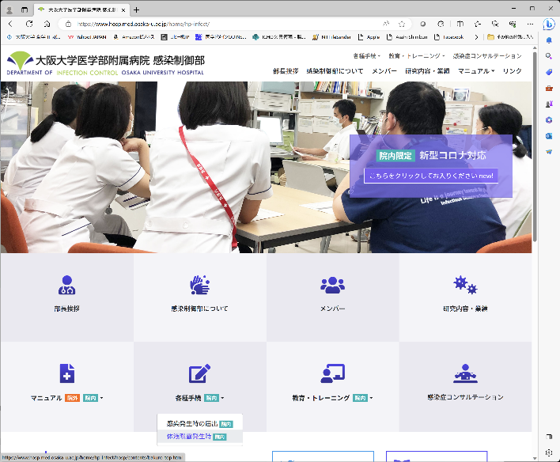
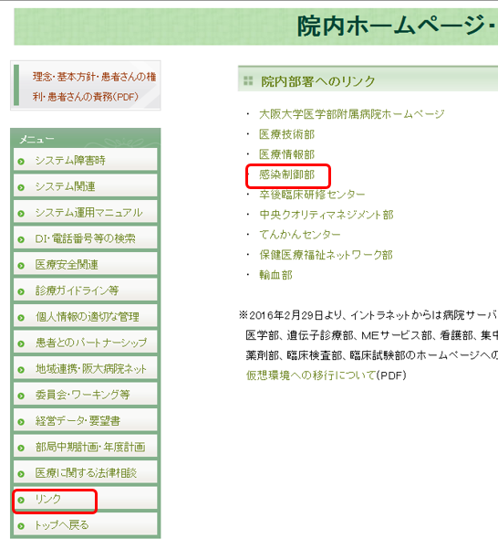
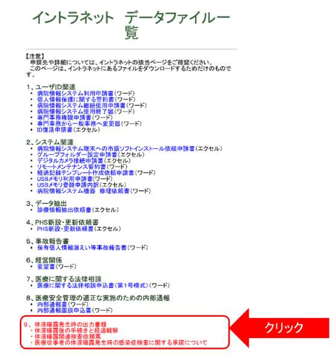
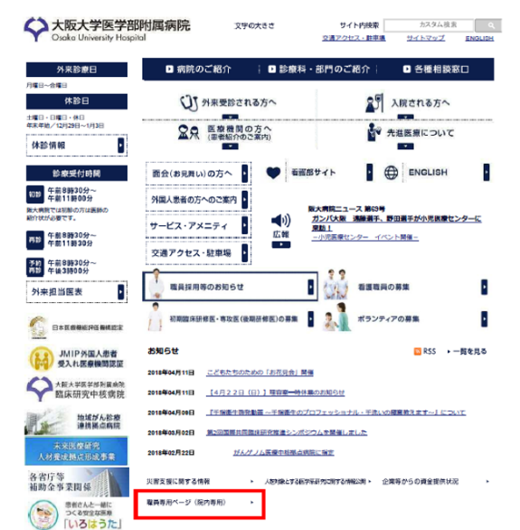
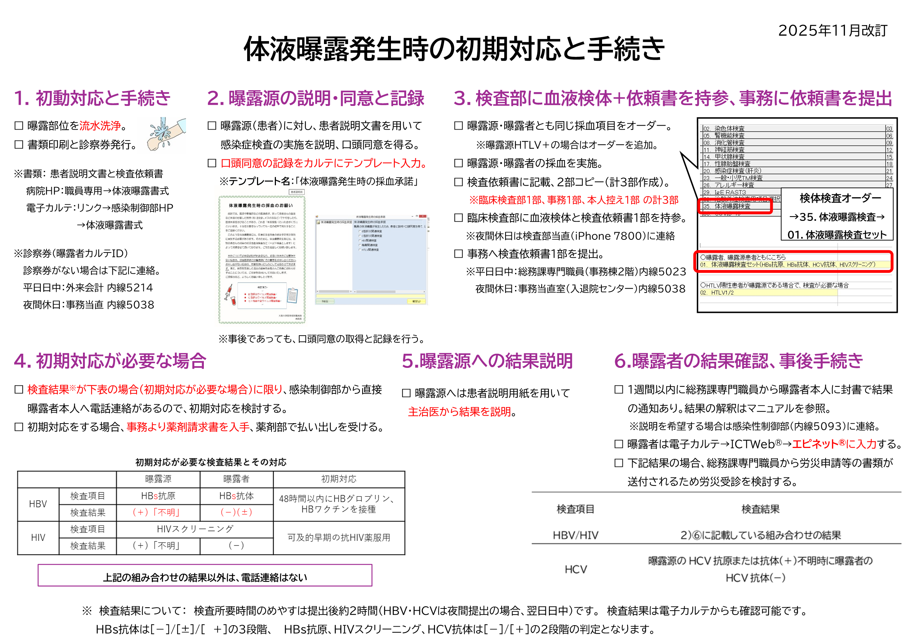
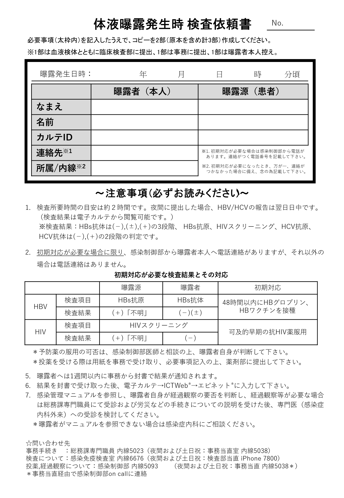
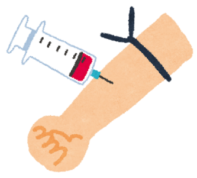
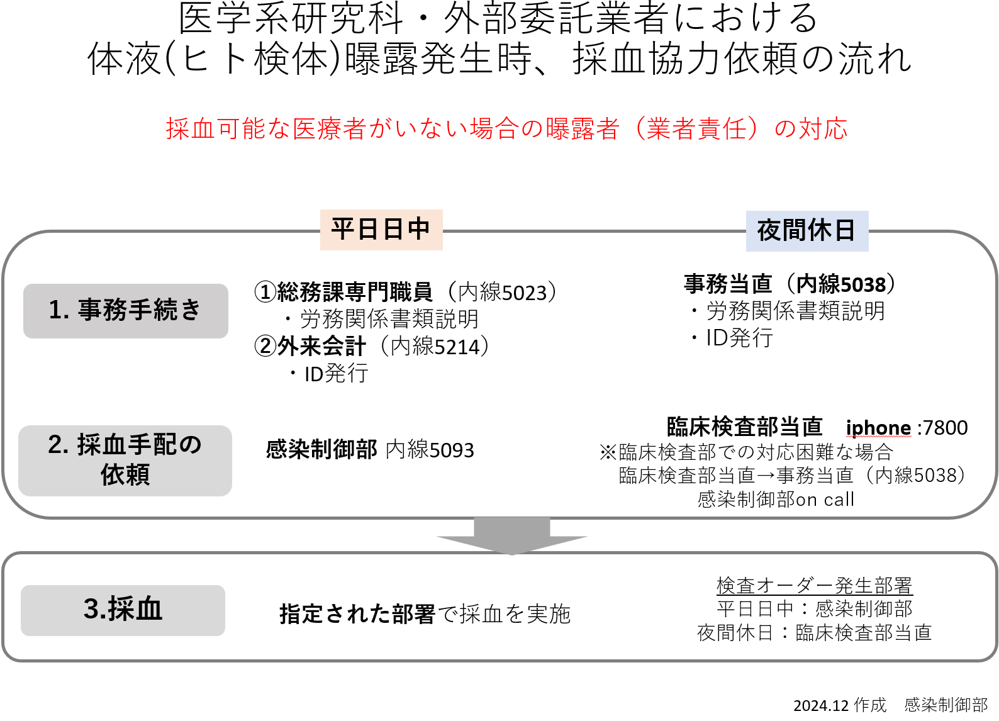

Ⅲ. 体液曝露対策 2. 発生時の対応
- 初期対応
- 発生直後の対応
- 曝露部位（針刺し・切創等の経皮的創傷、粘膜、皮膚など）を確認する
- 曝露部位を直ちに洗浄する
- 創傷、粘膜・正常な皮膚、創傷のある皮膚：流水・石鹸で十分に洗浄する。
- 口腔：大量の水でうがいする。
- 眼：生理食塩水で十分に洗浄する。
- 曝露の程度（深さ、体液注入量、直接接触量、皮膚の状態）を確認する
- 原因鋭利器材の種類、その使用対象者（曝露源）および使用目的を確認する
- 発生後の手続き
- 書類の作成
- 発生直後の対応
- 初期対応


病院情報システム→院内HP→「リンク」→感染制御部HP→「体液曝露発生時」＊1または、病院HP「職員専用ページ」→「体液曝露発生時出力書類一式」＊2から必要書類を出力し、体液曝露関連検査依頼票を記入後、２部コピーする。＊１：病院情報システムからの出力方法


＊2：病院HPシステムからの出力方法
- 曝露源患者への採血説明と口頭同意の取得、診療録への記載
- 基本的には体液曝露関連検査依頼票の項目（HBV,HCV,HIV）の検査の実施について、口頭同意をもらう（但し、HTLV関連検査が必要な場合（既知でHTLVが陽性など）は追加検査項目として事前に同意をもらう）。意思表出の出来ない患者は事後に本人または家人に口頭同意をもらう。口頭同意が不可能な場合は事前の非承諾の患者以外は検査を進める。
- 診療録に口頭同意を得た記録をする（テンプレート名：体液曝露発生時の採血承諾）。
- 検体採取
- カルテIDを作成（職員でカルテIDのない人）のために、平日日中は外来会計 内線5214、夜間休日は事務当直 内線5038に連絡する。
- 電子カルテへの登録とバーコードラベルの発行
- 曝露源患者への採血説明と口頭同意の取得、診療録への記載
検体検査オーダーの機能別「体液曝露検査」より曝露源、曝露者ともに登録し、バーコードラベルを印刷後、採血容器に貼付する。
- 採血
採血容器：分離剤入り緑の採血容器 採血量＝６mL
- 検体の電子カルテへの登録とバーコードラベルの発行
- 採血容器・採血量は曝露源と同じ。外部委託職員は採血が出来ない場合、感染制御部（平日8：30～17：15；内：5093）あるいは臨床検査部（夜間17：15～翌日8：30，土・日曜/祝祭日；iphone：7800）に連絡する。
＊検査項目にHIVが含まれ妊娠が危惧される場合は、妊娠反応検査の依頼が可能。（希望者はハルンカップに尿20ccを採取し、提出）
- 検体・書類の提出
平日8：30～17：15，土曜・日曜・祝祭日 8：30～12：30
下記２点を臨床検査部に持参する。
平日17：15～翌日8：30，土曜・日曜・祝祭日 12：30～翌日8：30
臨床検査部（iphone：7800）に連絡の上、下記２点を持参する。
［提出物］
・曝露源検体と曝露者検体（原則は両検体を同時に提出）
但し、以下の曝露の場合は、対応が異なるので注意する。
- 曝露源がご遺体の場合（死後数時間経過している場合）は、採血はせず曝露源不明とする。
- 血液製剤による曝露は、体液曝露対応としない。
・体液曝露関連検査依頼票（１部提出）
- 事務部への書類の提出
平日8：30～17：15は総務課専門職員（内：5023）
夜間17：15～翌日8：30，土・日曜/祝祭日は事務当直室（内：5038）
［提出物］
・体液曝露関連検査依頼票（１部提出）
- 結果報告とその後の対応
HIV,HBVの結果は、以下の組み合わせの場合のみ感染制御部から電話連絡があり対応の検討を行う。その他の結果は、電子カルテまたは総務課専門職員からの用紙での報告（約1週間後）を確認する。
尚、曝露源への結果説明は主治医から行う。
※予防薬の払い出しは、感染制御部と相談の上、総務課専門職員（内：5023）、時間外は事務当直（内：5038）にて薬剤請求書を受け取り、薬剤部（内：6011，6014）⑫番窓口（地下1階）で払い出しを受けて投薬する。
- エピネットの記入および報告
電子カルテ⇒「その他部門」⇒ ICTWeb® ⇒針刺し⇒A.針刺し・切創報告書/手術部、B.皮膚・粘膜汚染報告書/手術部より曝露者が入力する。
- 受診と経過観察
以下の結果組み合わせの場合、曝露後に感染の可能性があると判断し（下記参照）、経過観察が必要な場合は総務課専門職員にて受診および労災などの手続きについての説明を受けた後、専門医（感染症内科外来）を受診する。※HTLV-1は曝露源が既知で陽性が判明している場合のみ曝露者の検査を実施
検査項目 | 検査結果 |
HBV/HIV | 2）⑥に記載している組み合わせの結果 |
HCV | 曝露源のHCV抗原または抗体(＋)不明時に曝露者のHCV抗体(−) |
- それぞれの病原体に対する対応
- HBVによる曝露
- 感染率
- HBVによる曝露
- それぞれの病原体に対する対応
HBワクチン接種
48時間以内にHBグロブリン投与
受 診
再受診
１ヶ月後
３ヶ月後
６ヶ月後
１、６ヶ月後にHBワクチン追加接種
曝露直後
の検査
曝露源および曝露者の
HBs抗原・抗体検査
↓
曝露源：HBs抗原(＋)or不明
曝露者：HBs抗体（－)（＋−）
※１
HBV曝露後の対応
曝露者のHBs抗原・抗体， AST，ALTなどの検査
１回のHBV曝露による感染率は約6-30%である。
※１ 曝露体液中のウイルス量および移入量により大きく異なる。
- 対応
曝露後の対応（右図）
発症の予防方法は、曝露後24時間以内（遅くとも48時間以内）に、HBV用免疫グロブリン製剤 （乾燥抗ＨＢｓ人免疫グロブリン）を投与（体重70Kg以下は1000単位、体重71Kg以上は2000単位）するとともに、HBワクチンを接種する。また、初回ワクチン接 種の１ヵ月後および３～６ヶ月後に追加接種する（全３回）。HBVワクチン ワクチンの免疫が付かない方 については、初回のHBグロブリン投与後、1ヶ月後の再投与を検討する。
発生源不明の場合、曝露発生状況から曝露者と相談の上対応を検討する。
- HCVによる曝露
予防薬なし
HCV曝露後の対応
曝露源がHCV感染者である場合は、曝露者への感染確認のために経過観察が必要となる。
AST，ALTなどの検査
曝露源および被汚染者の
HCV抗体検査
↓
曝露源：HCV抗原または抗体(＋)
曝露者：HCV抗体(－)
※１，２
受 診
再受診
１ヶ月後
３ヶ月後
６ヶ月後
曝露直後
の検査
- 感染率
１回のHCV曝露による感染率は約1.8-5％である。
※１ 曝露体液中のウイルス量および移入量により大きく異なる。
※２ HCV抗体が陽性であっても、感染既往抗体の可能性もある。
- 対応
曝露後の対応（右図）
発症の予防方法はなく、このことから、定期的な経過観察は極めて重要となる。
- HIVによる曝露
- 感染率
- HIVによる曝露
１回のHIV曝露による感染率は約0.3%である。
可及的早期に抗HIV薬の内服
HIV曝露後の対応
内服しても、感染阻止率は100%ではないことから、曝露者の経過観察が必要となる。
HIVスクリーニング抗原・抗体検査， など
曝露源および曝露者の
HIVスクリーニング検査
↓
曝露源：HIVスクリーニング(＋)
or不明
曝露者：HIVスクリーニング(－)
※１，２
受 診
再受診
１ヶ月後
３ヶ月後
６ヶ月後
曝露直後
の検査
※１ 曝露体液中のウイルス量および移入量により大きく異なる。
※２ 曝露源のHIVスクリーニング陽性の場合は、直ちに曝露源のHIV確認検査を依頼する。
- 対応
曝露後の対応（右および下図）
発症の予防方法は、曝露後可能な限り速やかに、抗HIV薬を内服ビクタルビ 1回1錠、1日1回 28日間を内服する（内服する場合は以下を注意）。
注） 妊娠の可能性のある女性は、妊娠反応検査を実施する。
注） HBV感染を確認するために、HBs抗原検査を実施する。
発生源不明の場合、曝露発生状況から曝露者と相談の上対応を検討する。
- HTLVによる曝露
※曝露源が既知で陽性が判明している場合のみ曝露者の検査を実施
経過観察
HTLV曝露後の対応
曝露者への感染確認のために
経過観察が必要となる。
HTLV抗体などの検査
↓
感染が確認されても治療法は無い
曝露源および曝露者の
HTLV抗体検査
↓
曝露源：HTLV抗体(＋)
曝露者：HTLV抗体(－)
受 診
再受診
１ヶ月後
３ヶ月後
６ヶ月後
曝露直後
の検査
- 感染率
１回のHTLV曝露による感染率は不明である。
- 対応
発症の予防方法はない （感染制御部の医師に相談する）。
- 職員の体液曝露後フォローアップ
職員の体液曝露後フォローアップ
- 曝露者は、曝露検査報告書を持参して、感染症内科外来を受診（月・火 8時30分～11時00分）
- 外来担当医は、曝露源陽性項目を確認し、その検査項目（下記参照）をオーダーする
- 曝露者は2階の臨床検査部で採血を実施する
- 外来担当医は、下記のスケジュールで次回外来予約を行う
- 陽転化が見られた時は、下記紹介先に照会する
感染症 | 検査項目 | フォローアップ期間 | 紹介先 | ||
1か月 | 3か月 | 6か月 | |||
HBV | HBs抗原・抗体, AST, ALT | ○ | ○ | ○ | 消化器内科 肝胆膵 |
HCV | AST, ALT | ||||
HIV | HIVスクリーニング | 感染症内科で継続 | |||
HTLV※ | HTLV抗体 | 血液腫瘍内科 | |||
※曝露源が既知で陽性が判明している場合のみ曝露者の検査を実施


No.
HBワクチン 及び 抗HBs免疫グロブリン 払い出し請求書
薬剤部御中
〇薬剤請求者
（所属・職）
（氏 名）
〇薬剤請求（請求する薬剤にレ印）
- B型肝炎ワクチン
薬剤部記入欄
□ヘプタバックス-Ⅱ 0.5ml × 1本 （Lot No. ）
□ビームゲン注0.5ml （Lot No. ）
- 抗HBs免疫グロブリン
□静注用 ヘブスブリン-IH 薬剤部記入欄
1000単位 × （ ）本 （Lot No. ）
針刺し・切創による体液曝露に際し、上記薬剤の投与を希望されていますので、請求者に薬剤をお渡し願います。
年 月 日
感染制御部部長
忽那賢志
HIV予防投薬 払い出し請求書
薬剤部 御中
薬剤請求者：体液曝露等の当事者
職種
所属
氏名
請求薬剤：
ビクタルビ 1回1錠、1日1回 28日間
注１）以上２種の薬剤を体液曝露後速やかに（可能であれば2時間以内に）、
服薬を開始してください。
注２）B型肝炎キャリアの方は服薬開始後日に感染症内科医師を受診してください。
注３）上記薬剤を開始後、可及的早急に感染制御部からの指示を受けてください。
体液曝露（針刺し・切創等）発生に際して、上記薬剤服薬を希望されていますので、請求者に薬剤をお渡し願います。
年 月 日
感染制御部
忽那 賢志
体液曝露発生時の採血のお願い
病院では、医師や看護師などの医療者が、誤って患者さんの血液など体液の付着した器具（例：注射針、メスの刃など）でケガをしたり、直接体液を浴びることがあり、これを「体液曝露（たいえきばくろ）」といいます。十分な注意を行っていても一定の確率で発生することをご理解ください。
このような体液曝露時には、医療従事者自身の感染予防を計画的に実施する必要があります。そのために、体液曝露発生時には、当該患者さんの感染の状況を血液検査など（＊以下検査します）によって把握させて頂いております。ご協力を宜しくお願い致します。
検査項目
- Ｂ型肝炎ウイルス関連検査
- Ｃ型肝炎ウイルス関連検査

ヒト免疫不全ウイルス関連検査
大阪大学医学部附属病院
病院長
